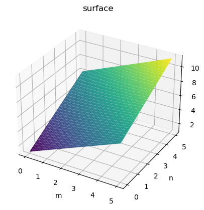
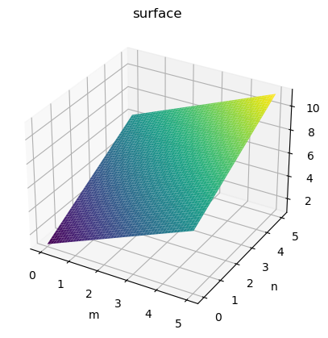
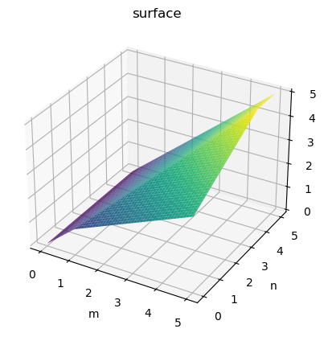
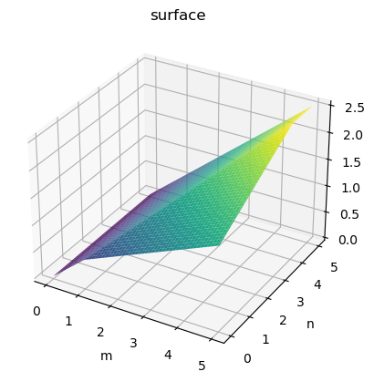
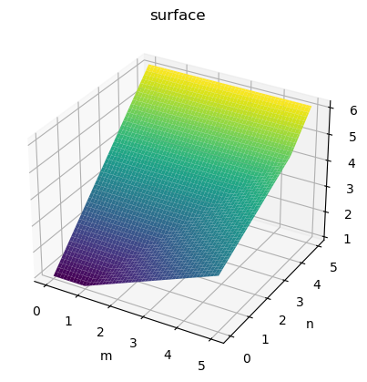
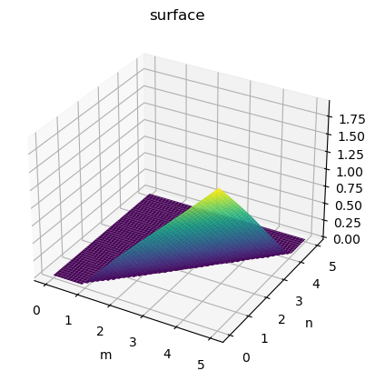
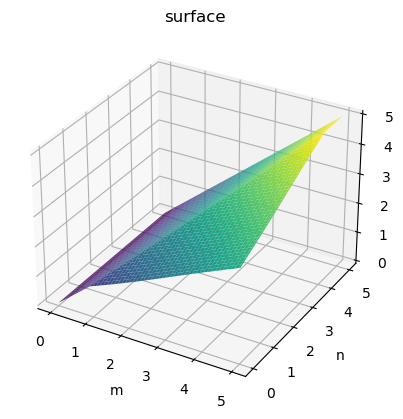
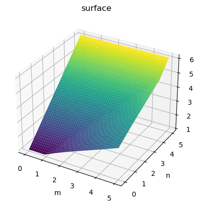
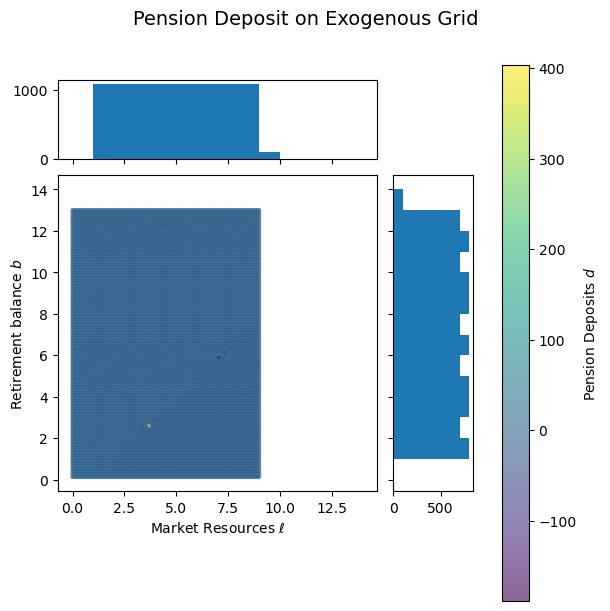

import matplotlib.pyplot as plt
import numpy as np
from ConsPensionContribModel import PensionContribConsumerType, init_pension_contrib
figures_path = "../Figures/"
baseline_params = init_pension_contrib.copy()
baseline_params["mCount"] = 100
baseline_params["mMax"] = 10
baseline_params["mNestFac"] = -1
baseline_params["nCount"] = 100
baseline_params["nMax"] = 12
baseline_params["nNestFac"] = -1
baseline_params["lCount"] = 100
baseline_params["lMax"] = 9
baseline_params["lNestFac"] = -1
baseline_params["b2Count"] = 100
baseline_params["b2Max"] = 13
baseline_params["b2NestFac"] = -1
baseline_params["aCount"] = 100
baseline_params["aMax"] = 8
baseline_params["aNestFac"] = -1
baseline_params["bCount"] = 100
baseline_params["bMax"] = 14
baseline_params["bNestFac"] = -1
baseline_params["cycles"] = 1
agent = PensionContribConsumerType(**baseline_params)
def plot_3d_func(func, min, max, n=100):
# get_ipython().run_line_magic("matplotlib", "widget")
xgrid = np.linspace(min, max, n)
ygrid = xgrid
xMat, yMat = np.meshgrid(xgrid, ygrid, indexing="ij")
zMat = func(xMat, yMat)
ax = plt.axes(projection="3d")
ax.plot_surface(xMat, yMat, zMat, cmap="viridis")
ax.set_title("surface")
ax.set_xlabel("m")
ax.set_ylabel("n")
ax.set_zlabel("f")
plt.show()
agent.solve()
T = 0
Post Decision Stage#
plot_3d_func(agent.solution[T].post_decision_stage.v_func.vFuncNvrs, 0, 5)

plot_3d_func(agent.solution[T].post_decision_stage.dvda_func.cFunc, 0, 5)

plot_3d_func(agent.solution[T].post_decision_stage.dvdb_func.cFunc, 0, 5)

Consumption Stage#
plot_3d_func(agent.solution[T].consumption_stage.c_func, 0, 5)

plot_3d_func(agent.solution[T].consumption_stage.v_func.vFuncNvrs, 0, 5)

plot_3d_func(agent.solution[T].consumption_stage.dvdl_func.cFunc, 0, 5)
plot_3d_func(agent.solution[T].consumption_stage.dvdb_func.cFunc, 0, 5)

Deposit Stage#
plot_3d_func(agent.solution[T].deposit_stage.d_func, 0, 5)

plot_3d_func(agent.solution[T].deposit_stage.c_func, 0, 5)

plot_3d_func(agent.solution[T].deposit_stage.v_func.vFuncNvrs, 0, 5)
plot_3d_func(agent.solution[T].deposit_stage.dvdm_func.cFunc, 0, 5)
plot_3d_func(agent.solution[T].deposit_stage.dvdn_func.cFunc, 0, 5)

%time
plot_3d_func(agent.solution[T].deposit_stage.gaussian_interp, 0, 5)
CPU times: total: 0 ns
Wall time: 0 ns
Grids#
grids = agent.solution[T].consumption_stage.grids_before_cleanup
def scatter_hist(x, y, color, ax, ax_histx, ax_histy):
# no labels
ax_histx.tick_params(axis="x", labelbottom=False)
ax_histy.tick_params(axis="y", labelleft=False)
# the scatter plot:
hist = ax.scatter(x, y, c=color, cmap="viridis", alpha=0.6, s=5)
# now determine nice limits by hand:
binwidth = 1
xymax = max(np.max(x), np.max(y))
xymin = min(np.min(x), np.min(y))
top = (int(xymax / binwidth) + 1) * binwidth
bottom = (int(xymin / binwidth) + 1) * binwidth
bins = np.arange(bottom, top + binwidth, binwidth)
ax_histx.hist(x, bins=bins)
ax_histy.hist(y, bins=bins, orientation="horizontal")
return hist
def plot_scatter_hist(x, y, color, title, xlabel, ylabel, filename):
# Create a Figure, which doesn't have to be square.
fig = plt.figure(figsize=(6, 6), constrained_layout=True)
# Create the main axes, leaving 25% of the figure space at the top and on the
# right to position marginals.
ax = fig.add_gridspec(top=0.75, right=0.75).subplots()
# The main axes' aspect can be fixed.
ax.set(aspect=1)
# Create marginal axes, which have 25% of the size of the main axes. Note that
# the inset axes are positioned *outside* (on the right and the top) of the
# main axes, by specifying axes coordinates greater than 1. Axes coordinates
# less than 0 would likewise specify positions on the left and the bottom of
# the main axes.
ax_histx = ax.inset_axes([0, 1.05, 1, 0.25], sharex=ax)
ax_histy = ax.inset_axes([1.05, 0, 0.25, 1], sharey=ax)
# remove non-finite values
idx = np.logical_and.reduce([np.isfinite(x), np.isfinite(y), np.isfinite(color)])
idx = np.logical_and.reduce([idx, x > 0, y > 0])
x = x[idx]
y = y[idx]
color = color[idx]
# Draw the scatter plot and marginals.
hist = scatter_hist(x, y, color, ax, ax_histx, ax_histy)
cbar = fig.colorbar(hist)
cbar.ax.set_ylabel("Pension Deposits $d$")
fig.suptitle(title, fontsize=14)
ax.set_xlabel(xlabel)
ax.set_ylabel(ylabel)
plt.show()
fig.savefig(figures_path + filename)
plot_scatter_hist(
grids["lMat"],
grids["b2Mat"],
grids["dMat"],
"Pension Deposit on Exogenous Grid",
r"Market Resources $\ell$",
"Retirement balance $b$",
"ExogenousGrid.pdf",
)

---------------------------------------------------------------------------
FileNotFoundError Traceback (most recent call last)
Cell In[22], line 1
----> 1 plot_scatter_hist(
2 grids["lMat"],
3 grids["b2Mat"],
4 grids["dMat"],
5 "Pension Deposit on Exogenous Grid",
6 r"Market Resources $\ell$",
7 "Retirement balance $b$",
8 "ExogenousGrid.pdf",
9 )
Cell In[21], line 35, in plot_scatter_hist(x, y, color, title, xlabel, ylabel, filename)
32 ax.set_ylabel(ylabel)
34 plt.show()
---> 35 fig.savefig(figures_path + filename)
File ~\miniconda3\envs\egmn-dev\lib\site-packages\matplotlib\figure.py:3343, in Figure.savefig(self, fname, transparent, **kwargs)
3339 for ax in self.axes:
3340 stack.enter_context(
3341 ax.patch._cm_set(facecolor='none', edgecolor='none'))
-> 3343 self.canvas.print_figure(fname, **kwargs)
File ~\miniconda3\envs\egmn-dev\lib\site-packages\matplotlib\backend_bases.py:2366, in FigureCanvasBase.print_figure(self, filename, dpi, facecolor, edgecolor, orientation, format, bbox_inches, pad_inches, bbox_extra_artists, backend, **kwargs)
2362 try:
2363 # _get_renderer may change the figure dpi (as vector formats
2364 # force the figure dpi to 72), so we need to set it again here.
2365 with cbook._setattr_cm(self.figure, dpi=dpi):
-> 2366 result = print_method(
2367 filename,
2368 facecolor=facecolor,
2369 edgecolor=edgecolor,
2370 orientation=orientation,
2371 bbox_inches_restore=_bbox_inches_restore,
2372 **kwargs)
2373 finally:
2374 if bbox_inches and restore_bbox:
File ~\miniconda3\envs\egmn-dev\lib\site-packages\matplotlib\backend_bases.py:2232, in FigureCanvasBase._switch_canvas_and_return_print_method.<locals>.<lambda>(*args, **kwargs)
2228 optional_kws = { # Passed by print_figure for other renderers.
2229 "dpi", "facecolor", "edgecolor", "orientation",
2230 "bbox_inches_restore"}
2231 skip = optional_kws - {*inspect.signature(meth).parameters}
-> 2232 print_method = functools.wraps(meth)(lambda *args, **kwargs: meth(
2233 *args, **{k: v for k, v in kwargs.items() if k not in skip}))
2234 else: # Let third-parties do as they see fit.
2235 print_method = meth
File ~\miniconda3\envs\egmn-dev\lib\site-packages\matplotlib\backends\backend_pdf.py:2808, in FigureCanvasPdf.print_pdf(self, filename, bbox_inches_restore, metadata)
2806 file = filename._file
2807 else:
-> 2808 file = PdfFile(filename, metadata=metadata)
2809 try:
2810 file.newPage(width, height)
File ~\miniconda3\envs\egmn-dev\lib\site-packages\matplotlib\backends\backend_pdf.py:713, in PdfFile.__init__(self, filename, metadata)
711 self.original_file_like = None
712 self.tell_base = 0
--> 713 fh, opened = cbook.to_filehandle(filename, "wb", return_opened=True)
714 if not opened:
715 try:
File ~\miniconda3\envs\egmn-dev\lib\site-packages\matplotlib\cbook\__init__.py:489, in to_filehandle(fname, flag, return_opened, encoding)
487 fh = bz2.BZ2File(fname, flag)
488 else:
--> 489 fh = open(fname, flag, encoding=encoding)
490 opened = True
491 elif hasattr(fname, 'seek'):
FileNotFoundError: [Errno 2] No such file or directory: '../Figures/ExogenousGrid.pdf'
plot_scatter_hist(
grids["mMat"],
grids["nMat"],
grids["dMat"],
"Pension Deposit on Endogenous Grid",
"Market Resources $m$",
"Retirement balance $n$",
"EndogenousGrid.pdf",
)

# definitions for the axes
left, width = 0.1, 0.65
bottom, height = 0.1, 0.65
spacing = 0.005
rect_scatter = [left, bottom, width, height]
rect_histx = [left, bottom + height + spacing, width, 0.2]
rect_histy = [left + width + spacing, bottom, 0.2, height]
# start with a square Figure
fig = plt.figure(figsize=(8, 8))
ax = fig.add_axes(rect_scatter)
ax_histx = fig.add_axes(rect_histx, sharex=ax)
ax_histy = fig.add_axes(rect_histy, sharey=ax)
x = agent.solution[T].deposit_stage.gaussian_interp.grids[0]
y = agent.solution[T].deposit_stage.gaussian_interp.grids[1]
color = agent.solution[T].deposit_stage.gaussian_interp.values
idx = np.logical_or(x < 0, y < 0)
x = x[~idx]
y = y[~idx]
color = color[~idx]
# use the previously defined function
hist = scatter_hist(x, y, color, ax, ax_histx, ax_histy)
cbar = fig.colorbar(hist)
cbar.ax.set_ylabel("Pension Deposits $d$")
fig.suptitle("Pension Deposit on Endogenous Grid", fontsize=16)
ax.set_xlabel("Market Resources $m$")
ax.set_ylabel("Retirement Savings $n$")
plt.show()
# fig.savefig(figures_path + "EndogenousGrid.pdf")

fig, ax = plt.subplots()
plot = ax.scatter(
grids["mMat"],
grids["nMat"],
c=grids["dMat"],
cmap="viridis",
vmin=-1,
vmax=5,
plotnonfinite=True,
alpha=0.6,
s=5,
)
cbar = fig.colorbar(plot)
cbar.ax.set_ylabel("Pension Deposits $d$")
plt.xlim([-1, 10])
plt.ylim([-1, 10])
(-1.0, 10.0)

fig, ax = plt.subplots()
scatter = ax.scatter(
grids["lMat"],
grids["b2Mat"],
# c=np.maximum(grids["dMat"], 0),
# cmap="viridis",
vmin=-2,
vmax=15,
plotnonfinite=True,
alpha=0.6,
s=5,
)
# cbar = fig.colorbar(scatter)
# cbar.ax.set_ylabel("Pension Deposits $d$")
plt.title("Pension Deposits on Exogenous Post-Decision Grid")
plt.xlabel(r"Liquid Wealth $\ell$")
plt.ylabel("Retirement Balance $b$")
fig.savefig(figures_path + "ExogenousGrid.pdf")
C:\Users\alujan\AppData\Local\Temp\ipykernel_35916\29046517.py:2: UserWarning: No data for colormapping provided via 'c'. Parameters 'vmin', 'vmax' will be ignored
scatter = ax.scatter(

grids = agent.solution[T].consumption_stage.grids_before_cleanup
from HARK.interpolation._sklearn import GeneralizedRegressionUnstructuredInterp
gauss_interp = GeneralizedRegressionUnstructuredInterp(
grids["dMat"],
[grids["mMat"], grids["nMat"]],
model="gaussian-process",
std=True,
model_kwargs={"normalize_y": True},
)
# get_ipython().run_line_magic("matplotlib", "widget")
plot_3d_func(gauss_interp, 0, 5)

# consumption_stage = agent.solution[T].consumption_stage
# dvdl_func_next = consumption_stage.dvdl_func
# dvdb_func_next = consumption_stage.dvdb_func
# c_func_next = consumption_stage.c_func
# v_func_next = consumption_stage.v_func
# dvdl_innr = dvdl_func_next(agent.lMat, agent.b2Mat)
# dvdb_innr = dvdb_func_next(agent.lMat, agent.b2Mat)
# def gp_inv(x):
# return agent.TaxDeduct / x - 1
# # endogenous grid method, again
# dMat = gp_inv(dvdl_innr / dvdb_innr - 1.0)
# dvdl_func_next(0.0, 0.0)
# def adaptive_func(lb):
# l, b = lb
# dvdl_innr = dvdl_func_next(float(l), float(b))
# dvdb_innr = dvdb_func_next(float(l), float(b))
# return dvdl_innr / dvdb_innr
# import warnings
# from adaptive import Learner2D, Runner, notebook_extension
# warnings.filterwarnings("ignore")
# import logging
# from adaptive.learner.Learner2D import minimize_triangle_surface_loss
# logging.getLogger("param.main").setLevel(logging.CRITICAL)
# # import distributed
# # client = distributed.Client()
# notebook_extension()
# loss = minimize_triangle_surface_loss
# learner = Learner2D(adaptive_func, bounds=[(0, 10), (0, 10)], loss_per_triangle=loss)
# runner = Runner(learner, loss_goal=0.001) # start calculation on all CPU cores
# runner.live_info() # shows a widget with status information
# runner.live_plot(update_interval=0.1)
# def plot(learner):
# plot = learner.plot(tri_alpha=0.2)
# return (plot.Image + plot.EdgePaths.I + plot).cols(2)
# runner.live_plot(plotter=plot, update_interval=0.1)